문제의 본질을 파악하고 해결하는 엔지니어
PROFILE
문제의 표면이 아닌 본질을 파악하고, 원인을 명확히 규명해 해결함으로써 시스템의 신뢰성을 책임지는 엔지니어 민동일입니다.
CONTACT
📞 010-4021-2420
✉️ tasabi0826@gmail.com
오픈소스 기여 경험
파이썬 코드 수정으로 사용자들의 편의성 개선
인프라 구축 경험
클라우드 환경에서 안정성과 효율성을 중점으로 인프라를 설계 및 구축
서버 효율화 및 실시간 기능 개발
싱글톤 패턴으로 메모리 사용률 개선, Redis를 이용한 실시간 알림 시스템 구현
교육 · 경험 · 자격증
교육/경험
CJ올리브네트웍스 교육 이수
· 2025.06–2025.08 · 클라우드 웨이브 · 총 400시간
University MakeUs Challenge
· 연합동아리 8기 서버 파트 수료
자격증 · 어학 · 수상
AWS Certified DevOps Engineer – Professional
(2025.09) · 아마존웹서비스
Certified Kubernetes Administrator (CKA)
(2025.09) · Cloud Native Computing Foundation
AWS Certified SysOps Administrator – Associate
(2025.08) · 아마존웹서비스
AWS Certified Solutions Architect – Associate
(2025.03) · 아마존웹서비스
리눅스마스터 2급
(2025.03) · 한국정보통신인력개발센터
SQL개발자(SQLD)
(2024.12) · 한국데이터베이스진흥센터
TOEIC Speaking Test
(2025.10) · Intermediate High급 · 영어
2025 AI 해커톤 – 최우수상
(2025.03) · 인하대학교 & 주식회사 나눔엔젤스
2024 생성형 AI 홍보콘텐츠 공모전 – 입상
(2024.12) · 인하대학교
기술 스택
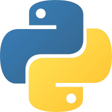
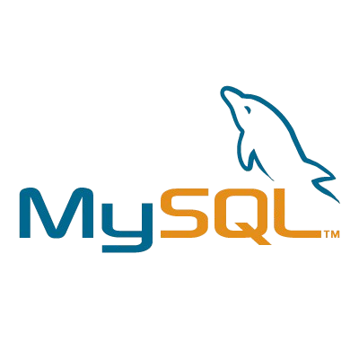
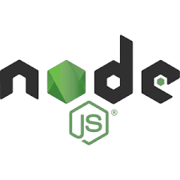
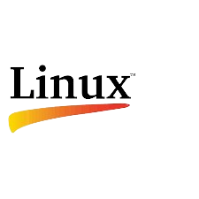
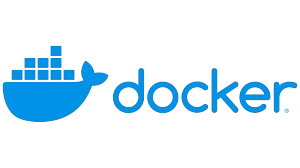
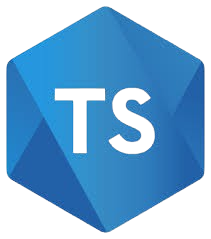
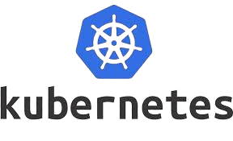
Cloud Infrastructure for E-Commerce Platform
https://github.com/cloud-wave-best-zizon
1. 프로젝트 개요
목표:
실제 트래픽 기반 성능, 보안, 비용을 고려한 최적의 클라우드 인프라 구축
참여 인원:
5명
주요 역할:
팀장 및 PM, API 개발, EKS 클러스터 및 클라우드 아키텍처 구축, 보안 시스템 설계 등
3. 기술적 문제 해결
문제 발생:
mTLS 구축 중, EKS AMI 설정 충돌로 Kubelet 시작 실패 및 ASG 노드 무한 루프 발생.
긴급 조치/분석:
ASG 용량을 0으로 설정해 무한 생성을 중단 후 로그 분석
최종 해결:
AWS 네이티브 솔루션(ALB, ACM Private CA)으로 전환
2. 주요 역할 및 기여 (아키텍처)
고성능/고효율 아키텍처 설계:
Java(x86)를 Go(ARM64)로 리팩토링하여 성능 개선 및 비용 절감. EKS 기반 MSA와 Kafka 메시지 큐를 도입하여 시스템 결합도 최소화
전체 시스템 아키텍처
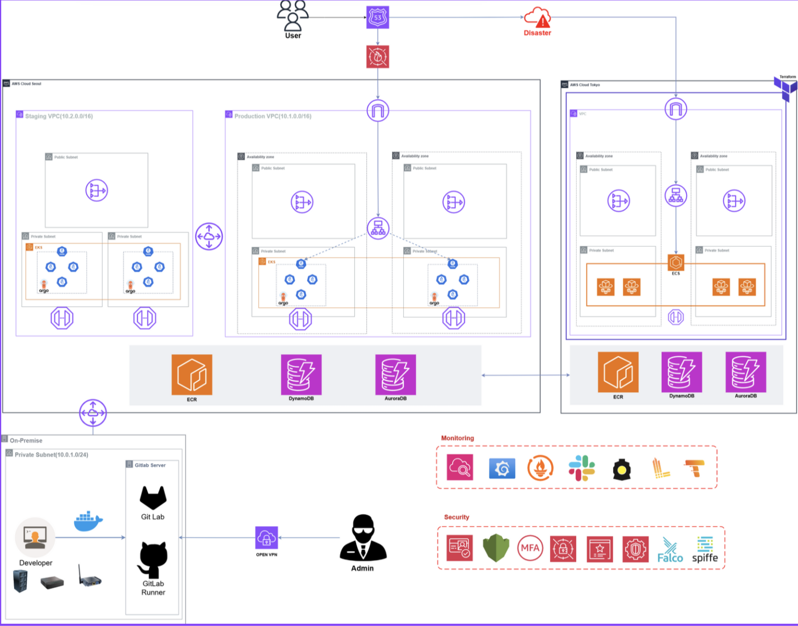
Cloud Infrastructure for E-Commerce Platform
2. 주요 역할 및 기여 (성능 및 비용)
실제 트래픽 기반 자동 확장(Autoscaling) 시스템 구축:
실제 세일 기간 트래픽으로 부하 테스트를 진행하여 HPA 임계치를 설정하고, Karpenter로 노드 자동 확장 환경 구현
성능 모니터링 대시보드
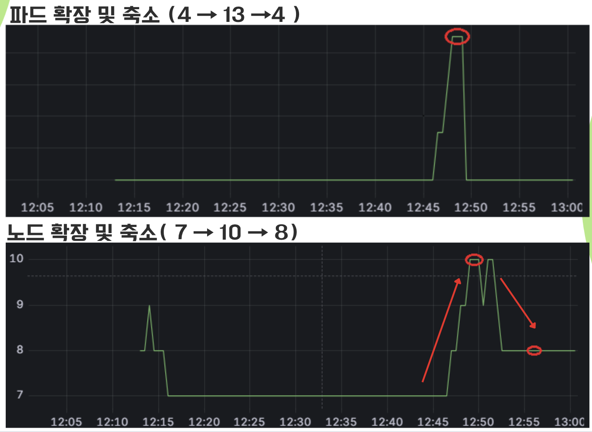
모든 인프라에 태그를 붙여 비용 추적
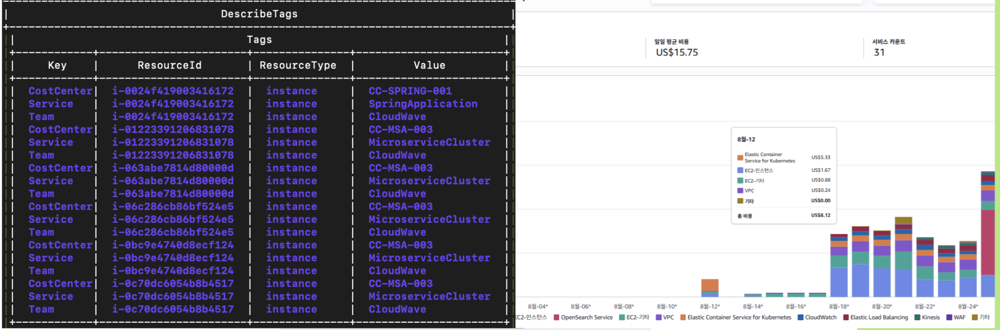
Cloud Infrastructure for E-Commerce Platform
2. 주요 역할 및 기여 (보안 및 DevOps)
보안 및 안정성을 고려한 DevOps 파이프라인 구축:
GitLab CI/CD와 블루/그린 배포 전략으로 무중단 배포 파이프라인 구축. AWS VPN 접근 제어 및 도쿄 리전 DR 환경 구성 (RTO 2시간, RPO 15분)
다계층 보안 설계:
사전 방어:
실제 보안 사고 기반 모의 해킹 테스트
인증/통신:
SPIRE 기반 mTLS로 Zero-Trust
런타임:
Falco 도입
정적 분석:
SonarQube 자동 스캔
보안 로깅 및 리포팅
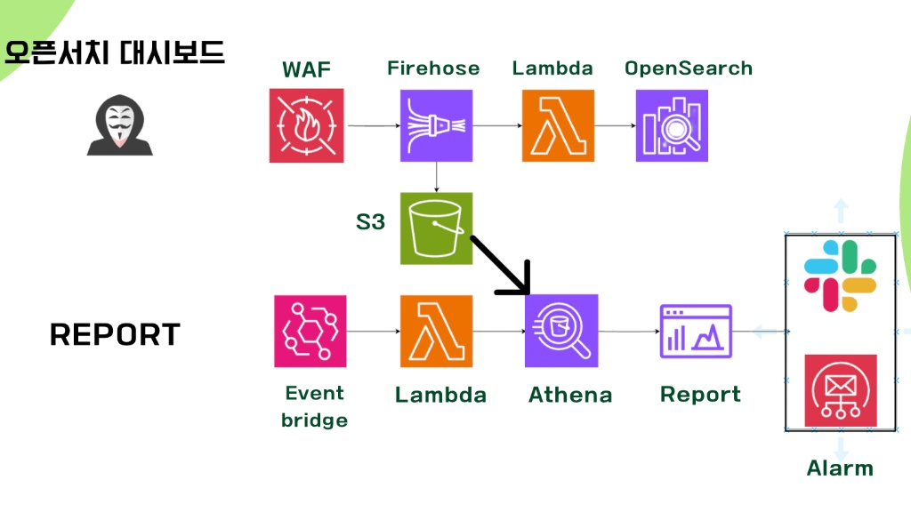 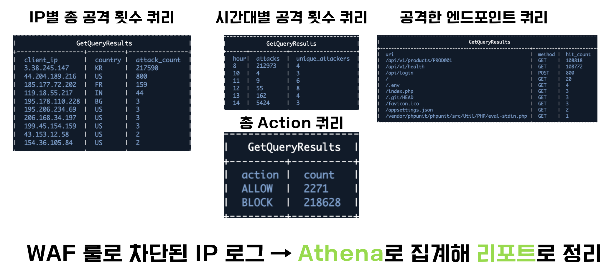
CI/CD 파이프라인 및 시크릿 키 자동 탐지
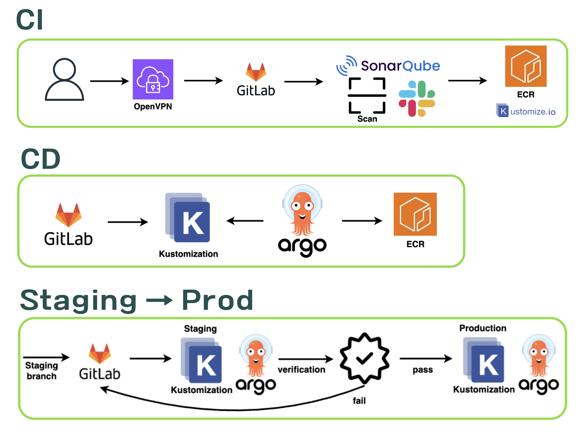 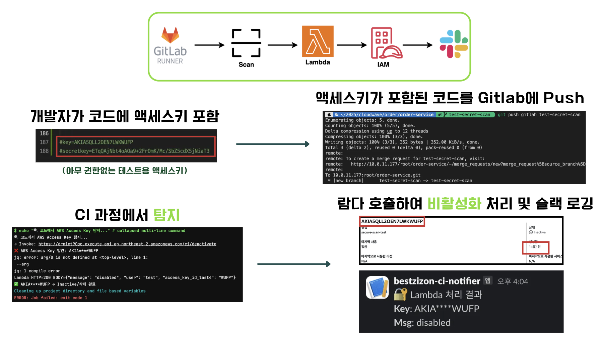
AI 기반 일기 서비스 플랫폼
https://github.com/inha-cloud-project-09
1. 프로젝트 개요
목표:
서버리스 인프라 기반의 AI 서비스 개발
참여 인원:
5명
주요 역할:
Python 백엔드 API, 서버리스 설계/구축, 프론트 프로토타입
3. 적용 기술
Backend:
Python, FastAPI
Infra/Cloud:
AWS Lambda, Bedrock, Comprehend, API Gateway, SNS, SQS, CloudWatch, S3, RDS
2. 주요 역할 및 기여
AI 기반 데이터 처리 API:
Bedrock·Comprehend로 감정 10D 벡터화
이벤트 주도 서버리스:
Lambda 모듈화, SNS/SQS 비동기, CloudWatch Events 일일 파이프라인
감정 벡터 k-means 군집화 API:
10D 감정 입력 → k-means → 군집 라벨·센트로이드 반환
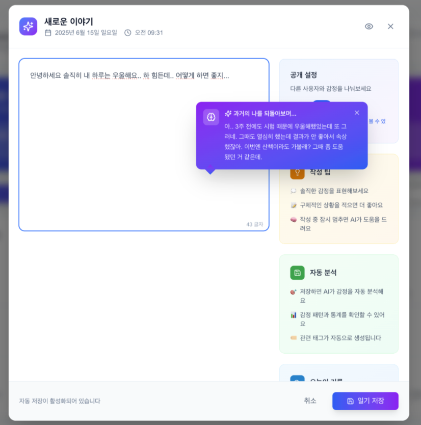 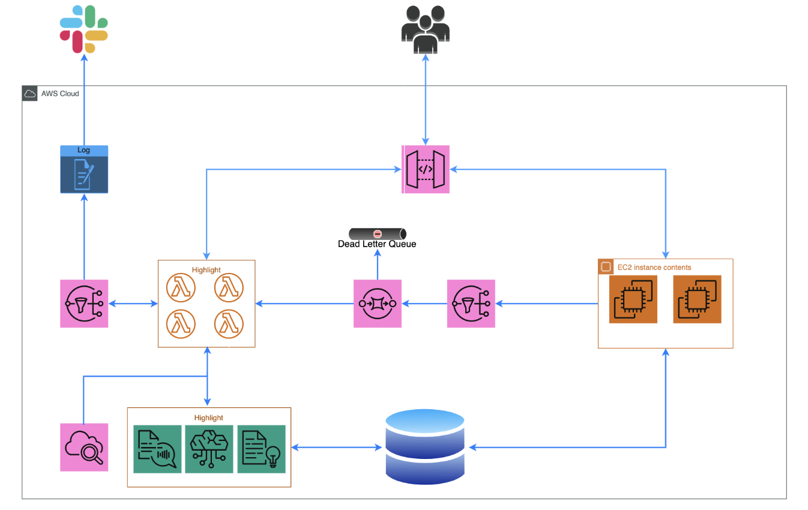
웹소켓 기반 실시간 채팅 및 영상 공유 플랫폼 (서비스 출시 프로젝트)
https://github.com/ON-AIR-mate
1. 프로젝트 개요
목표:
실시간 영상 공유 및 채팅 플랫폼 개발
참여 인원:
10명
주요 역할:
Node.js API, 인프라 구축, CI/CD
3. 적용 기술
Backend:
Node.js, Express, Redis, WebSocket
Infra/DevOps:
AWS EC2, S3, RDS, GitHub Actions
2. 주요 역할 및 기여
Redis Pub/Sub 알림:
지연 낮은 실시간 알림
CI/CD 자동화:
PR 트리거 테스트·빌드·배포
서버 성능 최적화:
싱글톤 패턴으로 DB 커넥션 제어
협업:
기술 공유·코드 리뷰 주도
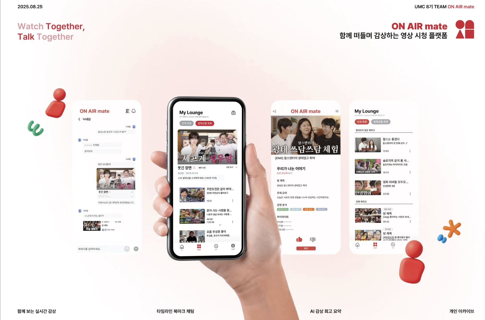 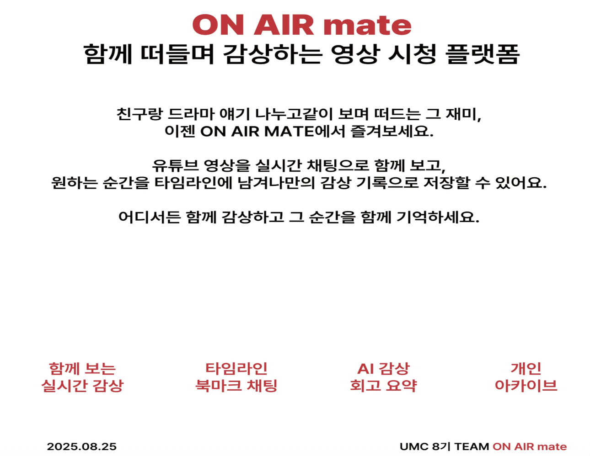
기타 활동
오픈소스 기여
Azure/co-op-translator (Pull Request #166)
오류 메시지 표준화:
Python 오류 메시지 패턴 통일로 디버깅 가이드 강화
디버깅 편의성:
오류에 파일명 포함, 원인 파악 시간 단축
문서 명확화:
Computer Vision 기능 환경변수 안내 보강